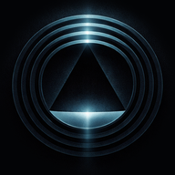
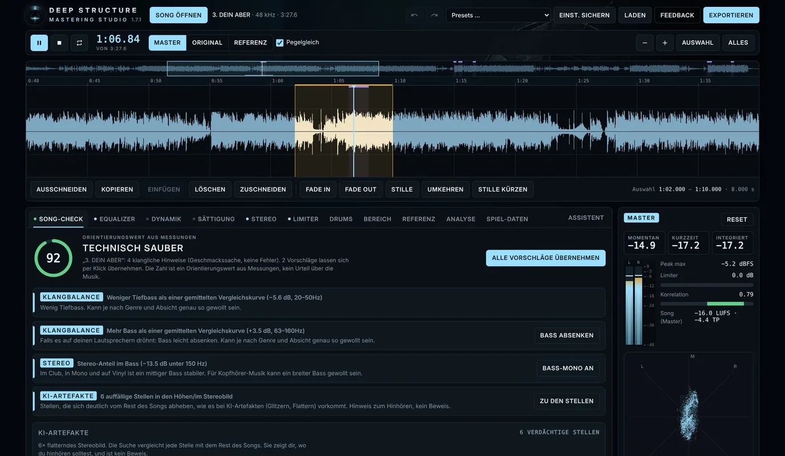

Ein Mastering-Studio, das im Browser auf deinem eigenen Gerät läuft: Es prüft deinen Song, repariert typische Schwächen von KI-Musik und bringt ihn mit einer vollständigen Mastering-Kette auf Veröffentlichungsniveau. Deine Audiodateien verlassen dabei dein Gerät nicht.
Geschlossene Beta

Misst Lautheit (LUFS), True Peak, Dynamik, Klangbalance und Stereobild und zeigt, wo dein Track schwächelt, mit Vorschlägen per Klick.
Findet Glitzern, Flattern, Knackser, stehende Störtöne und Rauschteppiche, typisch für KI-generierte Musik, und glättet sie gezielt.
Senkt feines Zischen zwischen den Obertönen einer Stimme, nur in der Mitte, nur beim Singen, sehr zurückhaltend einstellbar.
Glättet sandige und metallische Drums, ergänzt Ausklang und Punch und unterlegt Kick und Snare auf Wunsch mit sauberen Klängen.
8-Band-Equalizer mit Kerbfiltern, 3-Band-Kompressor, Sättigung, Stereobreite mit Bass-Mono und True-Peak-Limiter.
Pegelgleicher A/B-Vergleich mit Original und Referenz-Track, Hör-Vergleich als Näherung an PEAQ/ViSQOL.
Mehrere Songs als Album: Lautheit ausbalancieren, Versionen verwalten, „Mein Stil“ lernt aus deinen freigegebenen Masters.
WAV 16/24/32 Bit, MP3 und OGG, mit Nachmessung der fertigen Datei.
Regler, Fader, Jogwheel und Pads eines DJ- oder MIDI-Controllers frei belegen (MIDI-Learn), mit Crossfader für den Original/Master-Vergleich.
Das Studio wird derzeit mit einem kleinen Kreis von Testerinnen und Testern erprobt. Der Zugang erfolgt persönlich über eine freigegebene E-Mail-Adresse. Wenn du mittesten möchtest, schreib eine kurze Nachricht.
Zugang anfragen